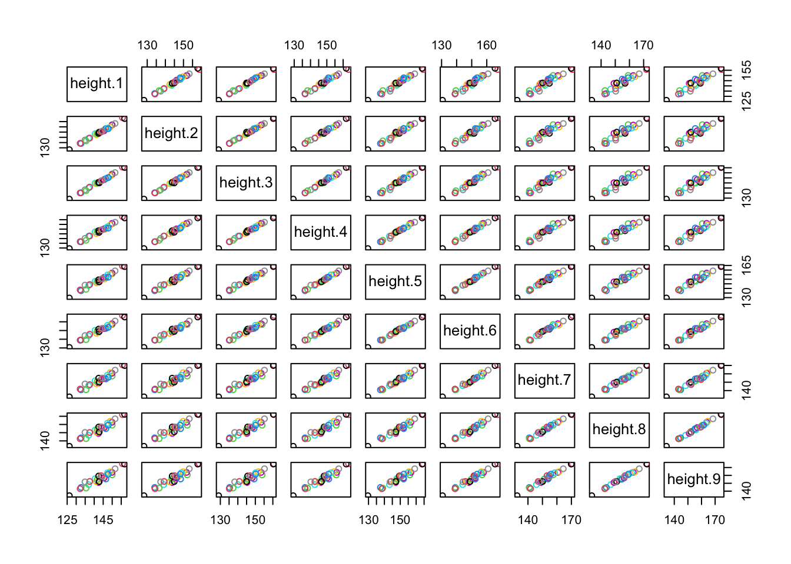
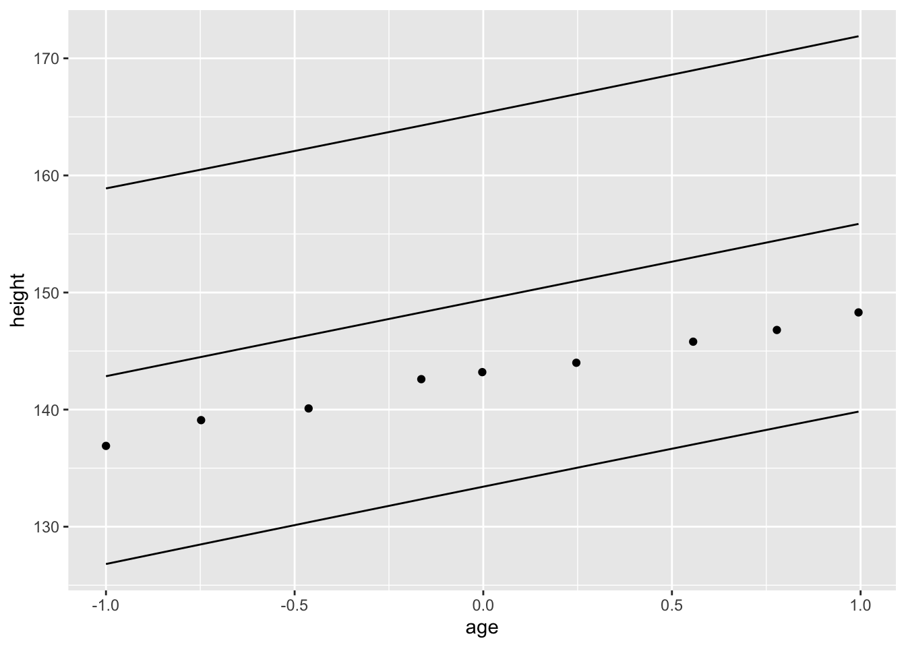
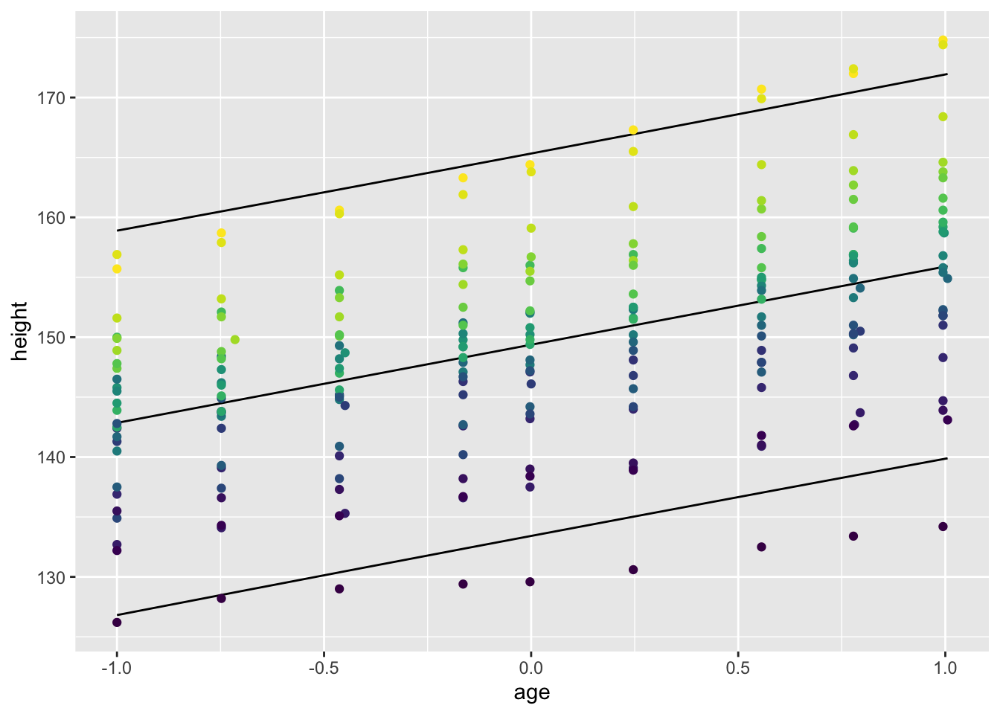
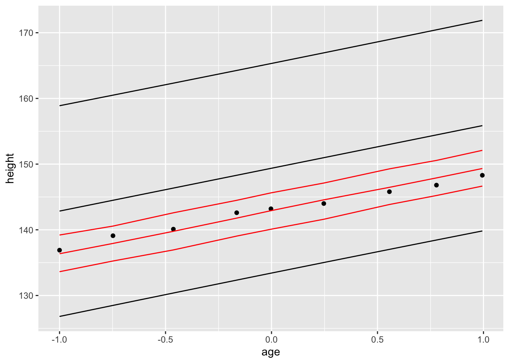
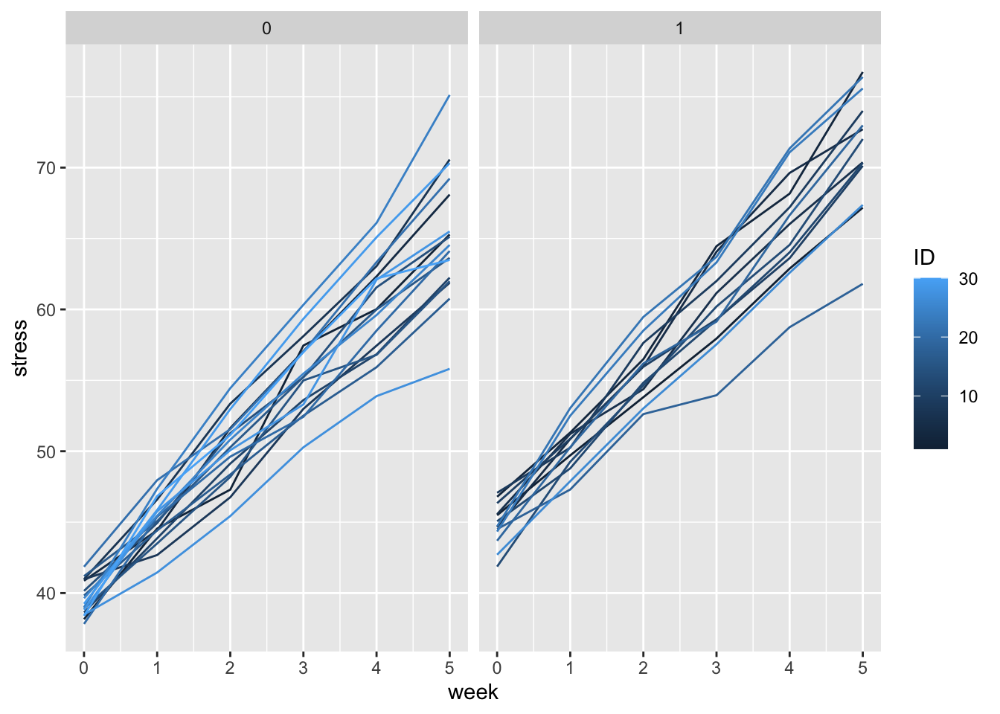
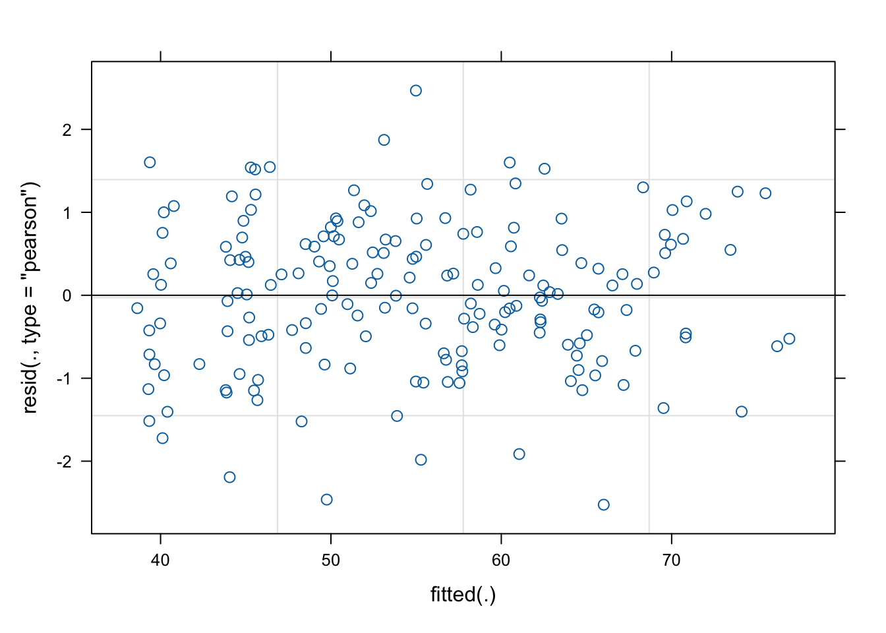
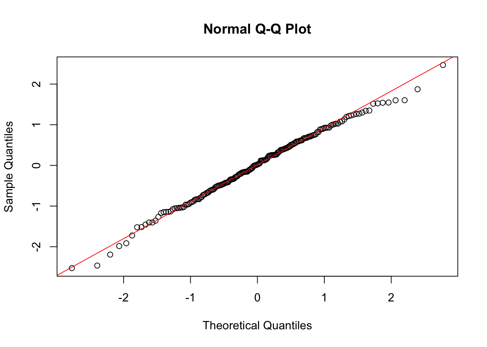
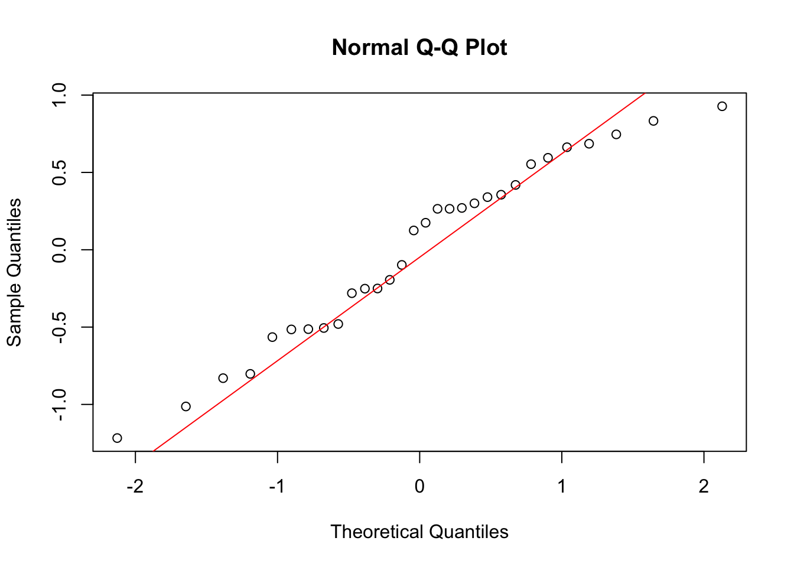
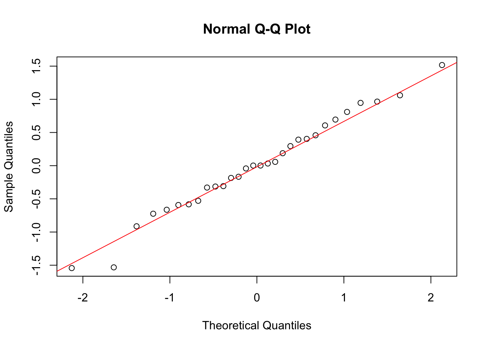

7 Multilevel Modelling Practical 6 (Week 7)
7.1 Instructions - start here!
Exercise 1 considers long and wide data shapes, illustrated by the Oxford boys data set. Exercise 2 involves a simulation exercise (simulating from a two-level longitudinal model). You may also use this lab to work on the formative assignment.
Let’s begin by loading the necessary packages and data:
7.2 Exercise 1 (Long and wide data shape)
Let’s return to the Oxboys data, discussed in the lecture, which is a built-in R data set:
This data set was by default given in long format. But assume we wanted this data in wide format, for instance in order to carry out a multivariate analysis.
Let’s have a brief look at the data frame:
## Grouped Data: height ~ age | Subject
## Subject age height Occasion
## 1 1 -1.0000 140.5 1
## 2 1 -0.7479 143.4 2
## 3 1 -0.4630 144.8 3
## 4 1 -0.1643 147.1 4
## 5 1 -0.0027 147.7 5
## 6 1 0.2466 150.2 6## [1] 234 4We see that there are two variables capturing the “time” component:
- the
agevariable - the
Occasionvariable
There is a one-to-one relationship between these two variables, so for the purpose of creating a “wide” data frame, we can choose any of these. In this case, we have decided to drop age:
## Subject height.1 height.2 height.3 height.4 height.5 height.6 height.7 height.8 height.9
## 1 1 140.5 143.4 144.8 147.10 147.70 150.2 151.7 153.3 155.8
## 10 2 136.9 139.1 140.1 142.60 143.20 144.0 145.8 146.8 148.3
## 19 3 150.0 152.1 153.9 155.80 156.00 156.9 157.4 159.1 160.6
## 28 4 155.7 158.7 160.6 163.30 164.40 167.3 170.7 172.0 174.8
## 37 5 145.8 147.3 148.7 149.78 150.22 152.5 154.8 156.4 158.7
## 46 6 142.4 143.8 145.2 146.30 147.10 148.1 148.9 149.1 151.0We can produce pairwise scatterplots of the data, which gives a sense of the correlation between heights measured at different times:

Let’s re-transform the data back into a long data format:
Oxboys.long<- reshape(Oxboys.wide, direction="long",
idvar="Subject", varying=list(2:10),v.names="height" )
head(Oxboys.long)## Subject time height
## 1.1 1 1 140.5
## 2.1 2 1 136.9
## 3.1 3 1 150.0
## 4.1 4 1 155.7
## 5.1 5 1 145.8
## 6.1 6 1 142.4TASK: Convince yourself that the Oxboys.long data frame is equivalent to the original Oxboys frame. Check also the help file for reshape and make sure you’re happy with the syntax.
7.2.1 Regression vs multilevel analysis
By ignoring group structure, we can fit a regression model of the form
\[y_{ti}=a+b T_{ti}+\epsilon_{ti}\]
Let’s also obtain prediction intervals for each response value:
lmpred <- data.frame(predict(model.lm,interval="prediction"))
lmpred$age <- Oxboys$age
lmpred$height <- Oxboys$height
lmpred$Subject <- Oxboys$Subject
head(lmpred)## fit lwr upr age height Subject
## 1 142.8508 126.8115 158.8901 -1.0000 140.5 1
## 2 144.4947 128.4920 160.4975 -0.7479 143.4 1
## 3 146.3526 130.3788 162.3263 -0.4630 144.8 1
## 4 148.3004 132.3430 164.2578 -0.1643 147.1 1
## 5 149.3542 133.3995 165.3088 -0.0027 147.7 1
## 6 150.9799 135.0212 166.9386 0.2466 150.2 1We see the fitted value \(\hat{y}_{ti} = \hat{a} +\hat{b} T_{ti}\), lower and upper limits of a 95% prediction interval, age, height and the subject label. Let’s plot the prediction interval for subject 2:
lmpredS2 <- lmpred[lmpred$Subject==2,]
ggplot(lmpredS2,aes(age,height))+
geom_point()+
geom_line(aes(y=fit))+
geom_line(aes(y=lwr))+
geom_line(aes(y=upr))
This doesn’t look terrible, although the fit tracks somewhat above the actual data.
TASK: Try generating the above plots for different subjects (in particular, try subjects 1 and 10). Does the prediction interval change? If not, why not?
Click for solution
The prediction interval does not change. The model ignores group structure and can only explain one source of variation (within individuals) but not the variation between individuals. Consequently, the prediction intervals use the estimated error variance based on the entire data set, irrespective of which individual (subject) we’re looking at. We can see this by plotting the full data set and overlaying the prediction interval:
\(~\)
Now, let’s fit a random intercept model of the form
\[y_{ti}=a+u_i + bT_{ti} + \epsilon_{ti}\] where the random intercept terms are \(u_i \sim N(0,\sigma^2_u)\). We use the following code to fit the model:
To obtain prediction intervals based on the lmer output, we need the following package:
Now obtain prediction intervals for each response value and append to the lmpred data frame to give a new data frame pred:
lmerpred <- data.frame(predictInterval(model.lmer))
names(lmerpred) <- c("fit2","lwr2","upr2")
pred <- cbind(lmerpred,lmpred)
head(pred)## fit2 lwr2 upr2 fit lwr upr age height Subject
## 1 141.6153 144.2665 138.8262 142.8508 126.8115 158.8901 -1.0000 140.5 1
## 2 143.2855 146.0189 140.5028 144.4947 128.4920 160.4975 -0.7479 143.4 1
## 3 145.0851 147.7315 142.5478 146.3526 130.3788 162.3263 -0.4630 144.8 1
## 4 146.9969 149.7938 144.4247 148.3004 132.3430 164.2578 -0.1643 147.1 1
## 5 148.1749 150.9344 145.4503 149.3542 133.3995 165.3088 -0.0027 147.7 1
## 6 149.7160 152.5418 147.0057 150.9799 135.0212 166.9386 0.2466 150.2 1Finally, we can overlay prediction intervals for subject 2:
predS2 <- pred[pred$Subject==2,]
ggplot(predS2,aes(age,height))+
geom_point()+
geom_line(aes(y=fit))+
geom_line(aes(y=lwr))+
geom_line(aes(y=upr))+
geom_line(aes(y=fit2),col="red")+
geom_line(aes(y=lwr2),col="red")+
geom_line(aes(y=upr2),col="red")
The prediction interval based on the random intercept model is much tighter (since the within subjects variation is considerably lower than for the simple linear regression model which ignores group structure).
To see this, consider first the summary of the linear regression model:
##
## Call:
## lm(formula = height ~ age, data = Oxboys)
##
## Residuals:
## Min 1Q Median 3Q Max
## -21.6570 -5.1403 0.4872 4.7514 18.9430
##
## Coefficients:
## Estimate Std. Error t value Pr(>|t|)
## (Intercept) 149.3718 0.5286 282.599 < 2e-16 ***
## age 6.5210 0.8170 7.982 6.64e-14 ***
## ---
## Signif. codes: 0 '***' 0.001 '**' 0.01 '*' 0.05 '.' 0.1 ' ' 1
##
## Residual standard error: 8.081 on 232 degrees of freedom
## Multiple R-squared: 0.2154, Adjusted R-squared: 0.2121
## F-statistic: 63.71 on 1 and 232 DF, p-value: 6.635e-14The square of the residual standard error gives an estimate of the residual error variance \(\sigma^2\).
Now consider the summary of the random intercept model:
## Linear mixed model fit by REML. t-tests use Satterthwaite's method ['lmerModLmerTest']
## Formula: height ~ 1 + age + (1 | Subject)
## Data: Oxboys
##
## REML criterion at convergence: 940
##
## Scaled residuals:
## Min 1Q Median 3Q Max
## -2.1857 -0.6350 -0.1339 0.6252 2.5357
##
## Random effects:
## Groups Name Variance Std.Dev.
## Subject (Intercept) 65.555 8.097
## Residual 1.718 1.311
## Number of obs: 234, groups: Subject, 26
##
## Fixed effects:
## Estimate Std. Error df t value Pr(>|t|)
## (Intercept) 149.3717 1.5902 25.0002 93.93 <2e-16 ***
## age 6.5239 0.1325 207.0000 49.23 <2e-16 ***
## ---
## Signif. codes: 0 '***' 0.001 '**' 0.01 '*' 0.05 '.' 0.1 ' ' 1
##
## Correlation of Fixed Effects:
## (Intr)
## age -0.002Look at the random effect variance estimate \(\sigma^2_u\) versus the estimate of residual variance \(\sigma^2\). Most of the variation is between subjects! Hence, after accounting for group structure, the within subjects variation is relatively small.
\(~\)
7.3 Exercise 2 (simulation from the two-level longitudinal model)
Suppose that we want to set up and simulate from a hypothetical model of MATH43515 student stress levels (for 30 students) over a 6 week period with the following variables:
stress- response variable on [0,100] with 100 representing max stress.week- time covariate taking values 1 to 6.ML- a binary (upper level) covariate taking the value 1 if a student has taken the Machine Learning module and 0 otherwise.ID- a unique student identifier.
Imagine that the model we want to simulate from takes the form
\[y_{ti}=a + u_i + b T_{ti} + v_i T_{ti} + c z_i + \epsilon_{ti}, \quad i=1,\ldots,30, \quad t=1,\ldots,6\]
where \(T_{ti}=t-1\) represents week number, \(z_i\) represents the binary ML variable, \(u_i \sim N(0,\sigma^2_u)\), \(v_i \sim N(0,\sigma^2_v)\) and \(\epsilon_{ti}\sim N(0,\sigma^2)\).
Let’s set up a data frame within which to store the simulated data:
set.seed(43515)
ID <- rep(seq(1,30),6)
ML <- rep(sample(0:1,30,replace=TRUE),6)
week <- rep(seq(0,5),each=30)
stress <- rep(0,180) #overwrite this later
data <- data.frame(ID,stress,week,ML) We will need to pick some parameter values. How about:
a <- 40 #baseline stress level
b <- 5 #stress increases 5 units with every week
c <- 5 #if you're taking ML, expected stress increases by 5 units!
sigu <- 1 # Random intercept standard deviation
sigv <- 1 # Random slope standard deviation
sig <- 1 #error standard deviationNow simulate from the model. We will do this by looping over time inside a loop over individuals:
set.seed(43515) #for reproducibility
#Simulate individual random effects
ui <- rnorm(30,0,sigu)
vi <- rnorm(30,0,sigv)
for(t in 1:6)
{
for(i in 1:30)
{
#simulate response at each time within individuals
data$stress[(t-1)*30+i] <-
a+ui[i]+(b+vi[i])*(t-1)+c*data$ML[(t-1)*30+i]+rnorm(1,0,sig)
}
}
head(data)## ID stress week ML
## 1 1 45.48698 0 1
## 2 2 38.15454 0 0
## 3 3 46.78894 0 1
## 4 4 40.86827 0 0
## 5 5 44.64929 0 1
## 6 6 45.55972 0 1Notice how the random effects only change from individual to individual. Let’s visualise the data we’ve generated:

Fit the model from which the data were simulated and check that the parameter estimates are consistent with the ground truth:
## Linear mixed model fit by REML. t-tests use Satterthwaite's method ['lmerModLmerTest']
## Formula: stress ~ 1 + week + ML + (1 + week | ID)
## Data: data
##
## REML criterion at convergence: 639.4
##
## Scaled residuals:
## Min 1Q Median 3Q Max
## -2.50911 -0.59396 0.02096 0.62229 2.45261
##
## Random effects:
## Groups Name Variance Std.Dev. Corr
## ID (Intercept) 0.5436 0.7373
## week 0.5565 0.7460 0.50
## Residual 1.0127 1.0063
## Number of obs: 180, groups: ID, 30
##
## Fixed effects:
## Estimate Std. Error df t value Pr(>|t|)
## (Intercept) 39.8509 0.2499 28.3719 159.44 < 2e-16 ***
## week 5.1770 0.1431 29.0001 36.17 < 2e-16 ***
## ML 5.0378 0.3769 28.0001 13.37 1.12e-13 ***
## ---
## Signif. codes: 0 '***' 0.001 '**' 0.01 '*' 0.05 '.' 0.1 ' ' 1
##
## Correlation of Fixed Effects:
## (Intr) week
## week 0.122
## ML -0.653 0.000All looks well - the fixed effect estimates and random effect variances are consistent with the ground truth values that generated the data. There are various ways in which you could perform further analysis and check against what you expect to see e.g.
- Check to see that the interaction between
MLandweekis insignificant.
Click for solution
Add in the cross level interaction as follows:
## Linear mixed model fit by REML. t-tests use Satterthwaite's method ['lmerModLmerTest']
## Formula: stress ~ 1 + week + ML + week:ML + (1 + week | ID)
## Data: data
##
## REML criterion at convergence: 639.7
##
## Scaled residuals:
## Min 1Q Median 3Q Max
## -2.49292 -0.59874 0.02114 0.62647 2.45536
##
## Random effects:
## Groups Name Variance Std.Dev. Corr
## ID (Intercept) 0.5443 0.7378
## week 0.5720 0.7563 0.50
## Residual 1.0127 1.0063
## Number of obs: 180, groups: ID, 30
##
## Fixed effects:
## Estimate Std. Error df t value Pr(>|t|)
## (Intercept) 39.8363 0.2514 27.9998 158.433 < 2e-16 ***
## week 5.1088 0.1925 28.0001 26.542 < 2e-16 ***
## ML 5.0713 0.3820 27.9998 13.277 1.32e-13 ***
## week:ML 0.1573 0.2924 28.0001 0.538 0.595
## ---
## Signif. codes: 0 '***' 0.001 '**' 0.01 '*' 0.05 '.' 0.1 ' ' 1
##
## Correlation of Fixed Effects:
## (Intr) week ML
## week 0.163
## ML -0.658 -0.107
## week:ML -0.107 -0.658 0.163\(~\)
- Check that the random time slope is needed (we know it is!)
Click for solution
Perform a likelihood ratio test of the null hypothesis \(H_0: \sigma_v=0\) as follows:
## ANOVA-like table for random-effects: Single term deletions
##
## Model:
## stress ~ week + ML + (1 + week | ID)
## npar logLik AIC LRT Df Pr(>Chisq)
## <none> 7 -319.69 653.38
## week in (1 + week | ID) 5 -387.72 785.43 136.06 2 < 2.2e-16 ***
## ---
## Signif. codes: 0 '***' 0.001 '**' 0.01 '*' 0.05 '.' 0.1 ' ' 1week is needed.
\(~\)
- Check the residual diagnostics.
Click for solution
Check residuals versus fitted values and normality of residuals and random effects:




Unsurprisingly (given how the data were generated), the model assumptions look reasonable.\(~\)
You could also consider adding in an additional covariate at the lower level!
If you’ve got this far and have time to spare, feel free to work on the formative assignment.
\(~\)